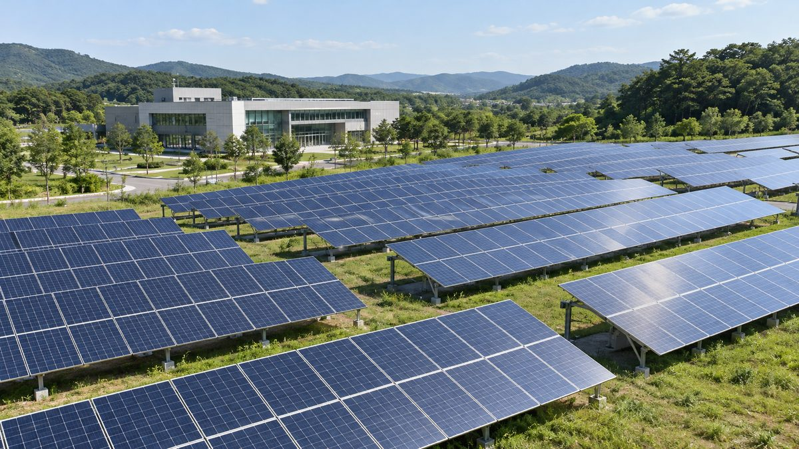

공공기관 땅도 재생에너지 사업에 수의계약으로 빌려주자는 법안 발의

심상정 의원, 신재생에너지법 제26조 임대 대상에 공공기관 재산 더해
심상정 정의당 의원이 2021년 6월 10일 공공기관 재산도 신재생에너지 사업에 수의계약으로 임대할 수 있게 하는 「신에너지 및 재생에너지 개발·이용·보급 촉진법」 개정안을 냈다. 기존 법은 국유·공유재산에 대해서만 신재생에너지 사업용 수의계약 임대·처분을 허용해, 공공기관이 자산을 빌려주는 방식으로 태양광 사업에 참여할 근거가 없었다. 개정안은 제26조의 대상을 공공기관 재산까지 넓히고, 공공기관이 가진 토지 등을 산업통상자원부령에 따라 수의계약으로 임대할 수 있는 조항(제7항)을 새로 뒀다. 심 의원은 개정안이 통과되면 공공기관이 신재생에너지사업과 그린뉴딜을 선도할 것으로 기대한다고 밝혔다.
시민에너지 관점
지금 법은 국유·공유재산만 신재생에너지 사업에 수의계약으로 빌려줄 수 있게 해, 공공기관이 가진 부지는 그 길에서 빠져 있었다. 수의계약이 특혜 시비를 부를 수 있다는 우려도 있지만, 상대를 주민·시민 조직으로 정하고 수익의 지역 환원을 조건으로 걸면 오히려 공공성을 높이는 장치가 될 수 있어 보인다. 공공부지가 공공의 자산인 만큼 그 위에서 나는 수익도 시민에게 돌아가는 것이 자연스럽다. 법 개정 논의에서 '누구에게 빌려주느냐'를 함께 정해야 한다.
출처: 이투뉴스 2021-06-14 진경남 원문 보기
公共機関の土地も再エネ事業に随意契約で貸し出せるようにする法案を発議
沈相奵議員、新再生エネルギー法第26条の賃貸対象に公共機関の財産を追加
正義党の沈相奵議員が2021年6月10日、公共機関の財産も新再生エネルギー事業に随意契約で賃貸できるようにする「新エネルギー及び再生エネルギー開発・利用・普及促進法」改正案を提出した。現行法は国有・公有財産についてのみ新再生エネルギー事業向けの随意契約による賃貸・処分を認めており、公共機関が資産を貸し出す形で太陽光事業に参加する根拠がなかった。改正案は第26条の対象を公共機関の財産にまで広げ、公共機関が保有する土地などを産業通商資源部令に基づき随意契約で賃貸できる条項（第7項）を新設した。沈議員は、改正案が成立すれば公共機関が新再生エネルギー事業とグリーンニューディールを先導すると期待していると述べた。
市民エネルギーの視点
現行法は国有・公有財産しか新再生エネルギー事業に随意契約で貸し出せず、公共機関が持つ用地はその道から外れていた。随意契約は特恵をめぐる論争を招きかねないとの懸念もあるが、相手を住民・市民組織に限り、収益の地域還元を条件とすれば、むしろ公共性を高める仕組みになり得るとみられる。公共用地は公共の資産である以上、その上で生まれる収益も市民に還元されるのが自然だ。法改正の議論では「誰に貸すのか」もあわせて定めるべきである。
出典: E2News 2021-06-14 Jin Kyung-nam 原文を読む
韩国国会提出法案：允许公共机构土地以随意合同租给可再生能源项目
沈相奵议员提议将公共机构财产纳入《新可再生能源法》第26条的租赁对象
正义党议员沈相奵于2021年6月10日提出《新能源及可再生能源开发、利用、普及促进法》修正案，允许公共机构财产以随意合同（不经招标）方式租给可再生能源项目。现行法律只允许国有和公有财产以随意合同方式出租或处置给可再生能源项目，公共机构若想通过出租资产参与太阳能项目，缺乏法律依据。修正案将第26条的适用对象扩大到公共机构财产，并新设第7款，规定公共机构拥有的土地等可依产业通商资源部令以随意合同方式出租。沈议员表示，修正案若获通过，期待公共机构引领可再生能源事业和绿色新政。
市民能源视角
现行法律只允许国有和公有财产以随意合同方式出租给可再生能源项目，公共机构拥有的用地一直被排除在外。有人担心随意合同可能引发特惠争议，但如果把对象限定为居民和市民组织，并以收益返还地方为条件，这反而可能成为提高公共性的机制。公共用地是公共资产，其上产生的收益回到市民手中理所当然。修法讨论中，应同时确定“租给谁”的问题。
来源: E2新闻 2021-06-14 Jin Kyung-nam 查看原文
Bill would let public agencies lease land to renewable projects without competitive bidding
Rep. Sim Sang-jung proposes adding public agency property to Article 26 of the renewable energy act
Justice Party lawmaker Sim Sang-jung on June 10, 2021 introduced an amendment to the Act on the Promotion of the Development, Use and Diffusion of New and Renewable Energy that would let public agencies lease their property to renewable projects through private contracts. The existing law allowed such private-contract leases and disposals only for state- and local government-owned property, leaving public agencies without a legal basis to join solar projects by leasing out their assets. The amendment extends Article 26 to cover public agency property and adds a new paragraph 7 allowing land owned by public agencies to be leased by private contract under a trade ministry ordinance. Sim said she expected public agencies to lead renewable energy projects and the Green New Deal if the bill passed.
Citizen Energy View
The current law lets only state- and local government-owned property be leased to renewable projects by private contract, leaving land held by public agencies out. Some worry that private contracts invite accusations of favoritism, but limiting the counterpart to residents and citizen groups and requiring revenue to be returned locally appears able to make it a tool that strengthens the public interest. Public land is a public asset, so it is natural that income generated on it returns to citizens. Any amendment should also settle the question of who the land is leased to.
Source: E2News 2021-06-14 Jin Kyung-nam Read the original